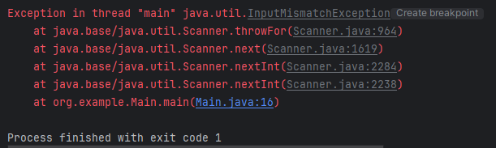

Nivel básico...
Hasta ahora, los programas sencillos que hemos hecho y pedían datos numéricos por teclado tenían un "pequeño" error...
→ Ve a lanzar alguno de los que hemos hecho y comprueba que si introduces un texto cuando nos pide un número, el programa falla:

En este error se informa el nombre de excepción generada: java.util.InputMismatchException, es decir, se nos informa del nombre de la clase de excepción y el paquete que la contiene: java.util.
Para controlar este tipo de errores se utiliza el famoso "control de excepciones", el cual debemos incluir a partir de ahora en nuestros programas cada vez que pidamos un número y necesitemos que sí o sí sea un valor numérico (porque hacemos operaciones con él).
Este control de excepciones de Java dispone de un mecanismo para capturar (catch) ciertos tipos de errores que sólo pueden ser detectados en tiempo de ejecución del programa. La estructura para expresar este control de excepciones es la siguiente:
try {
int x = entrada.nextInt();
} catch (InputMismatchException e) {
System.out.println("Introduce un número válido.");
}Para atrapar las excepciones debemos encerrar en un bloque try las instrucciones que generan excepciones, en nuestro caso, el método 'nextInt()' de la clase Scanner. Además, todo bloque try requiere que sea seguido por un bloque catch. Añade este trozo de código a alguno de tus programas anteriores y comprueba que funciona.
Los ejemplos más comunes para los que podemos nombrar de excepciones son:
- Tratar de convertir a entero un String que no contiene valores numéricos.
- Tratar de dividir por cero.
- Abrir un archivo de texto inexistente o que se encuentra bloqueado por otra aplicación.
- Conectar con un servidor de bases de datos que no se encuentra activo.
En resumen...
La captura de excepciones nos permite crear programas mucho más robustos y tolerante a errores que ocurren en escasas situaciones, pero en caso de que se presenten, podemos disponer de un algoritmo alternativo para reaccionar a dicha situación (evitando que el programa finalice su ejecución con errores).